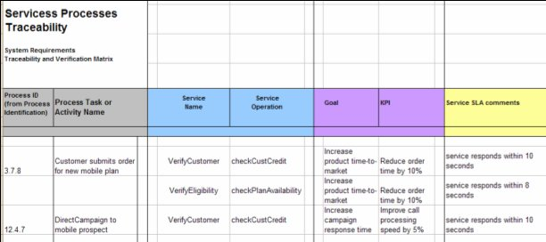

| Task: Update Requirements Traceability and Verification Matrix |
 |
|
The Requirements Traceability and Verification Matrix is updated at the system baseline to ratify the system architecture and to establish a basis for subsequent component architecture. |
| Roles | Primary Performer: | Additional Performers: |
|---|---|---|
| Inputs | Mandatory:
| Optional:
|
| Outputs |
|
|
The Requirements Traceability and Verification Matrix (RTVM) provides two purposes:
The document is created with details for the system requirements as part of the system baseline and reviewed at the System Requirements Review. The document is subsequently updated with details for the component requirements as part of the component baseline and reviewed at the Preliminary Design Review. For SOMA engagements, the RTVM is supplemented by the Services Process Traceability Matrix which defines what services can be applied to the business processes, and if the services can deliver the performance metrics for the goals associated with those processes. See the Services Process Traceability Matrix for more guidance on this.  Figure 1: Services Process Traceability Matrix The key parts of the Services Process Traceability Matrix are:
This matrix provides the following views:
|
| © Copyright IBM Corp. 1987, 2012 All Rights Reserved Property of IBM These materials are intended only for use as part of an IBM engagement |